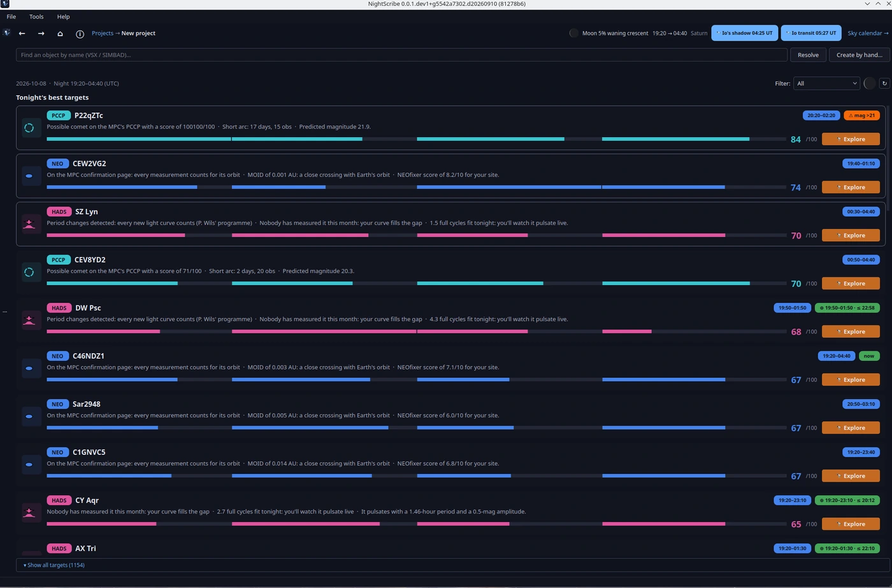

02. Planificar la noche


Planificar la noche en NightScribe no es una pestaña aparte: es el primer paso natural del ciclo de un proyecto. La app abre en Mis proyectos y, si aún no has seleccionado ninguno, el panel derecho te recibe con TU NOCHE DESDE TU OBSERVATORIO: la fecha, la ventana de oscuridad, la Luna y los planetas de esta noche, sobre un cielo pintado con su fase real.
Desde ahí, cualquiera de estas tres vías abre la vista Esta noche:
+ NUEVO PROYECTO, en la cabecera;
Crea un proyecto desde los objetivos de esta noche, en el panel de noche;
+ Nuevo proyecto…, en la lista de proyectos.
La vista responde a una pregunta concreta: qué vale más la pena observar esta noche, desde tu sitio, con tu equipo. Arriba tienes una barra de búsqueda (Buscar un objeto por nombre (VSX / SIMBAD)…, con Crear a mano… para lo que no esté en catálogo) y debajo, las sugerencias.
Los mejores objetivos de la noche
Primero, Los mejores objetivos de esta noche: uno por tipo (un NEO, un cometa, una supernova, un tránsito...) y luego los siguientes mejores, porque una noche variada vale más que tres NEOs iguales. Cada tarjeta muestra:
la puntuación de 0 a 100;
la frase «por qué esta noche»: la razón concreta de la propuesta («En la página de confirmación del MPC: cada medida cuenta», «Pasa a 3,2 distancias lunares el jueves»);
magnitud, altura máxima y su hora (o la ventana del tránsito), y el coste estimado en minutos de telescopio cuando se conoce.
Con ▾ Mostrar todos los objetivos se despliega la tabla completa, ordenable, con dos atajos útiles: Mostrar cubiertos incluye lo que ya observaste o publicaste, y el filtro de tipo acota la lista a una familia. El botón ↻ recalcula los objetivos (por si el cielo o tus ajustes han cambiado). Doble clic en cualquier fila para abrir la ficha del objeto. Al elegir un objetivo, de cualquiera de estas vías, nace el proyecto y pasas a su ficha (capítulo 03).
¿Por qué una puntuación y no una lista alfabética? Porque «visible» no es lo mismo que «valioso». El score mezcla cuatro cosas: **prioridad científica (¿cuánto falta tu medida?), observabilidad** (altura, horas disponibles, Luna, tu magnitud límite), urgencia (un candidato del NEOCP sin confirmar no espera a mañana) y gancho divulgativo (una supernova en M51 es también una buena historia). Un objeto puede ser observable y aun así puntuar bajo: simplemente hay mejores usos de tu hora de crepúsculo.
Lo que nunca se oculta
Las supernovas, cometas y tránsitos fuera de tu alcance salen directamente de la lista; en cambio los NEO y candidatos PCCP demasiado débiles se muestran atenuados, nunca escondidos. La diferencia es deliberada: la magnitud de un NEO recién descubierto es una predicción con bastante incertidumbre, y a veces el objeto está un par de magnitudes más brillante de lo anunciado. Planificar es saber qué hay ahí arriba, aunque esta noche no puedas con ello.
¿Por qué la Luna pesa tanto? La luz lunar no solo sube el fondo del cielo: multiplica el ruido de tus tomas justo en el rango de magnitudes de los objetos débiles. Un NEO de magnitud 20 a 30° de la Luna llena puede ser irrecuperable, y el mismo objeto, con Luna nueva, rutina. Por eso el score penaliza la interferencia lunar en vez de fingir que no existe.
El cielo de los próximos días
En la cabecera verás chips con los eventos próximos (una oposición, una lluvia, un eclipse probable). Clic en cualquiera y se abre el calendario del cielo (también en Herramientas → Calendario del cielo…): sesenta días de fases lunares, conjunciones, oposiciones, lluvias de meteoros y tránsitos de satélites galileanos sobre Júpiter, todo calculado en local para tu sitio.
¿Por qué «eclipse probable» y no «eclipse»? Predecir si un eclipse será visible desde tu sitio exige geometría fina (contactos, altura del Sol y de la Luna en cada fase). NightScribe calcula la geometría orbital y etiqueta con honestidad: «probable» significa que la geometría cuadra y merece que lo compruebes en una efeméride detallada.
El Sol, de contexto
El Calendario del cielo y el comando solar resumen la actividad solar del momento (manchas, llamaradas, viento). No es decoración: si haces divulgación, una mancha grande visible con filtros adecuados es un objetivo diurno; y una eyección de masa coronaria en camino explica (y anuncia) auroras.
Cuando hayas elegido objetivo, el siguiente paso es su proyecto: 03. Proyectos.